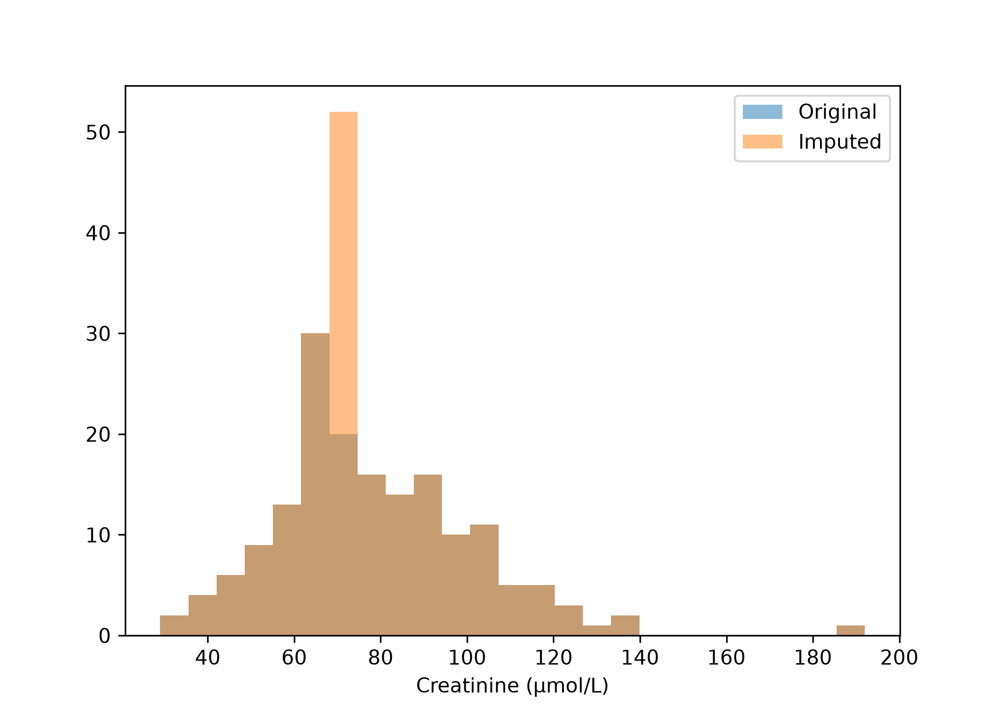
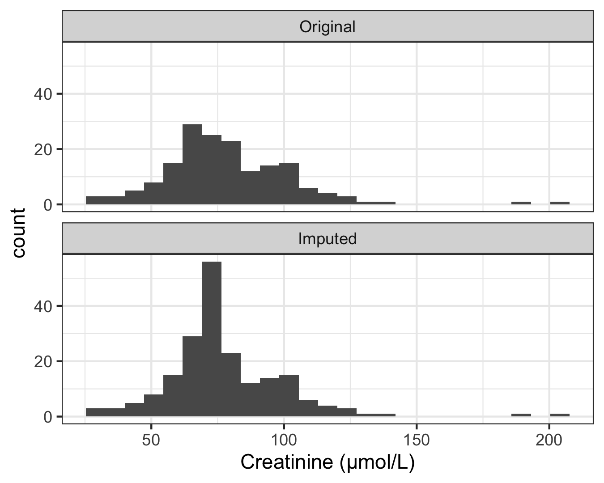

import pandas as pd
from sklearn.model_selection import (
train_test_split,
)
from sklearn.pipeline import Pipeline
from sklearn.compose import (
ColumnTransformer,
)
from sklearn.impute import SimpleImputer
from sklearn.preprocessing import (
OneHotEncoder,
StandardScaler,
)
from sklearn.linear_model import (
LinearRegression,
)
hospital = pd.read_csv(
"data/hospital_admissions.csv"
)
hospital["BMI"] = (
hospital["weight_kg"]
/ (hospital["height_cm"] / 100) ** 2
)
num = ["age", "BMI", "systolic_BP",
"heart_rate", "creatinine",
"CRP_mg_L"]
cat = ["admission_type",
"smoking_status"]
X = hospital[num + cat]
y = hospital["length_of_stay"]Exercise 2.6 — Understanding preprocessing pipelines
Note20-25 minutes, Python and R side by side
Every step is shown in both languages: Python on the left, R on the right. Run whichever you prefer and read the other. The two columns do the same thing, and seeing them next to each other is the point of this exercise.
Objectives
By the end of this exercise you will be able to:
- combine imputation, encoding, scaling and a model into one pipeline;
- look inside a fitted pipeline and say what each step learned, and from which patients;
- say what happens when the fitted pipeline meets new patients;
- give a reason for the order of the preprocessing steps.
The scenario
We want to predict how long patients will stay in hospital, using information available at admission.
In Exercise 2.3 — Exploring and cleaning messy patient data, Exercise 2.4 — Missing data and imputation and Exercise 2.5 — Scaling, transformations and feature engineering we applied encoding, imputation and scaling separately. Now we combine them into a pipeline.
But rather than treating a pipeline as a black box, we will look inside it to understand what is learned during training and what happens when it is applied to new patients.
Task 1 — Build and fit a pipeline (8 minutes)
Load the hospital admissions data, add BMI as in Exercise 2.5 — Scaling, transformations and feature engineering, and keep the outcome and the eight predictors.
This is the same file as in Exercise 2.4 — Missing data and imputation and Exercise 2.5 — Scaling, transformations and feature engineering. If you do not have it yet, download hospital_admissions.csv into your data folder.
Python
R
library(tidyverse)
library(tidymodels)
hospital <- read_csv(
"data/hospital_admissions.csv",
show_col_types = FALSE
) |>
mutate(
BMI = weight_kg / (height_cm / 100)^2,
across(
c(admission_type, smoking_status),
as.factor
)
) |>
select(
length_of_stay,
age, BMI, systolic_BP,
heart_rate, creatinine,
CRP_mg_L,
admission_type, smoking_status
)Split into 80% training and 20% test patients.
Python
X_train, X_test, y_train, y_test = (
train_test_split(
X, y,
test_size=0.2,
random_state=42,
)
)
print(len(X_train), len(X_test))#> 200 50R
set.seed(42)
split <- initial_split(
hospital, prop = 0.8
)
train <- training(split)
test <- testing(split)
cat(nrow(train), nrow(test), "\n")#> 200 50
NoteThe two columns hold different patients
Python and R shuffle with different random number generators, so random_state=42 and set.seed(42) do not pick the same 50 test patients. Expect the numbers in the two columns to be close, not identical. The steps, and what they teach, are the same.
Create a pipeline that imputes missing values, encodes categorical variables, standardises numerical variables and fits a linear regression model. Then fit it on the training patients.
Python
numeric = Pipeline([
("impute", SimpleImputer(
strategy="median")),
("scale", StandardScaler()),
])
categorical = Pipeline([
("impute", SimpleImputer(
strategy="most_frequent")),
("encode", OneHotEncoder(
handle_unknown="ignore")),
])
preprocessor = ColumnTransformer([
("numeric", numeric, num),
("categorical", categorical, cat),
])
model = Pipeline([
("preprocess", preprocessor),
("regression", LinearRegression()),
])
model.fit(X_train, y_train)Pipeline(steps=[('preprocess',
ColumnTransformer(transformers=[('numeric',
Pipeline(steps=[('impute',
SimpleImputer(strategy='median')),
('scale',
StandardScaler())]),
['age', 'BMI', 'systolic_BP',
'heart_rate', 'creatinine',
'CRP_mg_L']),
('categorical',
Pipeline(steps=[('impute',
SimpleImputer(strategy='most_frequent')),
('encode',
OneHotEncoder(handle_unknown='ignore'))]),
['admission_type',
'smoking_status'])])),
('regression', LinearRegression())])In a Jupyter environment, please rerun this cell to show the HTML representation or trust the notebook. On GitHub, the HTML representation is unable to render, please try loading this page with nbviewer.org.
Parameters
Fitted attributes
| Name | Type | Value |
|---|---|---|
| feature_names_in_ feature_names_in_: ndarray of shape (`n_features_in_`,) Names of features seen during :term:`fit`. Only defined if the underlying estimator exposes such an attribute when fit. .. versionadded:: 1.0 |
ndarray[object](8,) | ['age','BMI','systolic_BP',...,'CRP_mg_L','admission_type', 'smoking_status'] |
| n_features_in_ n_features_in_: int Number of features seen during :term:`fit`. Only defined if the underlying first estimator in `steps` exposes such an attribute when fit. .. versionadded:: 0.24 |
int | 8 |
Parameters
Fitted attributes
['age', 'BMI', 'systolic_BP', 'heart_rate', 'creatinine', 'CRP_mg_L']
Parameters
Fitted attributes
| Name | Type | Value |
|---|---|---|
| feature_names_in_ feature_names_in_: ndarray of shape (`n_features_in_`,) Names of features seen during :term:`fit`. Defined only when `X` has feature names that are all strings. .. versionadded:: 1.0 |
ndarray[object](6,) | ['age','BMI','systolic_BP','heart_rate','creatinine','CRP_mg_L'] |
| indicator_ indicator_: :class:`~sklearn.impute.MissingIndicator` Indicator used to add binary indicators for missing values. `None` if `add_indicator=False`. |
NoneType | None |
| n_features_in_ n_features_in_: int Number of features seen during :term:`fit`. .. versionadded:: 0.24 |
int | 6 |
| statistics_ statistics_: array of shape (n_features,) The imputation fill value for each feature. Computing statistics can result in `np.nan` values. During :meth:`transform`, features corresponding to `np.nan` statistics will be discarded. |
ndarray[float64](6,) | [ 63. , 27.29,127. , 80. , 74.5 , 10.4 ] |
6 features
| age |
| BMI |
| systolic_BP |
| heart_rate |
| creatinine |
| CRP_mg_L |
Parameters
Fitted attributes
6 features
| x0 |
| x1 |
| x2 |
| x3 |
| x4 |
| x5 |
['admission_type', 'smoking_status']
Parameters
Fitted attributes
2 features
| admission_type |
| smoking_status |
Parameters
Fitted attributes
5 features
| x0_Elective |
| x0_Emergency |
| x1_Current |
| x1_Former |
| x1_Never |
11 features
| numeric__age |
| numeric__BMI |
| numeric__systolic_BP |
| numeric__heart_rate |
| numeric__creatinine |
| numeric__CRP_mg_L |
| categorical__admission_type_Elective |
| categorical__admission_type_Emergency |
| categorical__smoking_status_Current |
| categorical__smoking_status_Former |
| categorical__smoking_status_Never |
Parameters
Fitted attributes
R
# "." means every other column
rec <- recipe(
length_of_stay ~ .,
data = train
) |>
step_impute_median(
all_numeric_predictors()
) |>
step_impute_mode(
all_nominal_predictors()
) |>
step_dummy(
all_nominal_predictors()
) |>
step_normalize(
all_numeric_predictors(),
-starts_with("admission_type_"),
-starts_with("smoking_status_")
)
model <- workflow() |>
add_recipe(rec) |>
add_model(
linear_reg() |> set_engine("lm")
)
fitted_model <- fit(model, data = train)The same pipeline, read across the two columns:
| What it does | Python | R |
|---|---|---|
| fill numeric gaps | SimpleImputer(strategy="median") |
step_impute_median() |
| fill categorical gaps | SimpleImputer(strategy="most_frequent") |
step_impute_mode() |
| turn categories into columns | OneHotEncoder() |
step_dummy() |
| standardise | StandardScaler() |
step_normalize() |
| say which columns get which step | ColumnTransformer |
selectors such as all_numeric_predictors() |
| preprocessing and model as one object | Pipeline |
workflow() |
| learn from the training patients | model.fit() |
fit() |
ImportantThink about it
- Which steps need to learn something from the training data?
- Why do we use different pipelines for numerical and categorical variables?
- What does
fit()actually do?
Task 2 — Look inside the pipeline (10 minutes)
Now we inspect what the pipeline learned, rather than simply trusting it.
A. Where does the imputation median come from?
Compare the training and test medians for creatinine, then ask the fitted pipeline which median it stored.
Python
print("Training median:",
X_train["creatinine"].median())#> Training median: 74.5print("Test median:",
X_test["creatinine"].median())#> Test median: 80.0imputer = (
model.named_steps["preprocess"]
.named_transformers_["numeric"]
.named_steps["impute"]
)
print("Pipeline median:",
imputer.statistics_[
num.index("creatinine")])#> Pipeline median: 74.5R
median(train$creatinine, na.rm = TRUE)#> [1] 76median(test$creatinine, na.rm = TRUE)#> [1] 78# the recipe fitted inside the workflow
trained_rec <- extract_recipe(
fitted_model, estimated = TRUE
)
# step 1 is the median imputation
tidy(trained_rec, number = 1) |>
select(terms, value)#> # A tibble: 6 × 2
#> terms value
#> <chr> <dbl>
#> 1 age 64
#> 2 BMI 27.7
#> 3 systolic_BP 128
#> 4 heart_rate 80
#> 5 creatinine 76
#> 6 CRP_mg_L 10.6
ImportantThink about it
- Which median did the pipeline learn?
- Will it use that same median when transforming the test patients?
- Why shouldn’t the test median be used to fill missing values in the test set?
B. Visualise the effect of imputation
Compare the creatinine distribution before and after imputation.
Python
import matplotlib.pyplot as plt
imputed_train = imputer.transform(
X_train[num]
)
plt.hist(
X_train["creatinine"].dropna(),
bins=25, alpha=0.5,
label="Original")
plt.hist(
imputed_train[
:, num.index("creatinine")],
bins=25, alpha=0.5,
label="Imputed")
plt.legend()
plt.xlabel("Creatinine (µmol/L)")
plt.show()
R
creatinine_median <- tidy(
trained_rec, number = 1
) |>
filter(terms == "creatinine") |>
pull(value)
bind_rows(
tibble(
creatinine = train$creatinine,
stage = "Original"
),
tibble(
creatinine = replace_na(
train$creatinine,
creatinine_median
),
stage = "Imputed"
)
) |>
ggplot(aes(x = creatinine)) +
geom_histogram(
bins = 25, na.rm = TRUE
) +
facet_wrap(
~ fct_inorder(stage), ncol = 1
) +
labs(x = "Creatinine (µmol/L)")
NoteWhy the R column fills the gaps by hand here
bake(trained_rec, new_data = train) returns creatinine after all the steps, so it has already been standardised and is no longer in µmol/L. To see imputation on its own, the R code takes the median the recipe learned and fills the gaps with it. The Python imputer is a separate object, so it can be applied on its own.
ImportantThink about it
What happens to the distribution when several patients receive exactly the same median value?
C. What happens to the number of columns?
Python
processed = (
model.named_steps["preprocess"]
.transform(X_train)
)
print("Original features:",
X_train.shape[1])#> Original features: 8print("Processed features:",
processed.shape[1])#> Processed features: 11names = (
model.named_steps["preprocess"]
.get_feature_names_out()
)
for name in names:
print(name)#> numeric__age
#> numeric__BMI
#> numeric__systolic_BP
#> numeric__heart_rate
#> numeric__creatinine
#> numeric__CRP_mg_L
#> categorical__admission_type_Elective
#> categorical__admission_type_Emergency
#> categorical__smoking_status_Current
#> categorical__smoking_status_Former
#> categorical__smoking_status_NeverR
processed_train <- bake(
trained_rec, new_data = train
)
# minus 1: the outcome is not a predictor
cat("Original predictors:",
ncol(train) - 1, "\n")#> Original predictors: 8cat("Processed predictors:",
ncol(processed_train) - 1, "\n")#> Processed predictors: 9names(processed_train)#> [1] "age" "BMI"
#> [3] "systolic_BP" "heart_rate"
#> [5] "creatinine" "CRP_mg_L"
#> [7] "length_of_stay" "admission_type_Emergency"
#> [9] "smoking_status_Former" "smoking_status_Never"
Note11 columns in Python, 9 in R
Neither is a mistake. OneHotEncoder() makes one column for every category. step_dummy() leaves out the first category of each variable, because it is implied by the others: a patient who is not Emergency is Elective. Both tables hold the same information.
ImportantThink about it
- Why did the number of columns increase?
- Which original variables were responsible?
- What would happen if we one-hot encoded age or CRP instead?
Task 3 — Apply the pipeline to new patients (5 minutes)
A fitted pipeline should apply the same learned transformations to new patients.
Python
predictions = model.predict(X_test)
print("First five predictions:",
predictions[:5].round(2))#> First five predictions: [3.51 4.76 2.34 6.6 3.61]R
predictions <- predict(
fitted_model, test
)
head(predictions, 5)#> # A tibble: 5 × 1
#> .pred
#> <dbl>
#> 1 5.07
#> 2 1.18
#> 3 6.68
#> 4 6.47
#> 5 7.27The predictions alone cannot show which medians were used to make them. To see what would change, fit a second copy of the pipeline on the test patients and compare what the two copies learned. This is only to look: a pipeline fitted on the test patients must never be used to judge a model.
Python
from sklearn.base import clone
refit = clone(model).fit(
X_test, y_test
)
refit_imputer = (
refit.named_steps["preprocess"]
.named_transformers_["numeric"]
.named_steps["impute"]
)
pd.DataFrame({
"training": imputer.statistics_,
"test": refit_imputer.statistics_,
}, index=num).round(1)#> training test
#> age 63.0 65.5
#> BMI 27.3 26.6
#> systolic_BP 127.0 129.5
#> heart_rate 80.0 76.5
#> creatinine 74.5 80.0
#> CRP_mg_L 10.4 10.8R
refit <- fit(model, data = test)
refit_rec <- extract_recipe(
refit, estimated = TRUE
)
tidy(trained_rec, number = 1) |>
select(terms, training = value) |>
mutate(
test = tidy(
refit_rec, number = 1
)$value
)#> # A tibble: 6 × 3
#> terms training test
#> <chr> <dbl> <dbl>
#> 1 age 64 65
#> 2 BMI 27.7 26.7
#> 3 systolic_BP 128 126.
#> 4 heart_rate 80 80.5
#> 5 creatinine 76 78
#> 6 CRP_mg_L 10.6 10.8
ImportantThink about it
- Is the imputation median recalculated for the test data?
- Does the scaler calculate a new mean and standard deviation?
- What would be different if we fitted a new pipeline on the test patients?
- Why is this important when deploying a model in a hospital?
Final reflection — Preprocessing choices and order
1. Imputation and scaling
Should we impute missing numerical values before standardising them? What would happen if we reversed the order?
2. One-hot encoding continuous features
If we accidentally one-hot encoded age, blood pressure and CRP, what would happen to the number of columns and the information they contain?
3. Scaling one-hot encoded features
Would applying standard scaling to the resulting 0/1 categorical indicators be mathematically incorrect? Why might we prefer to leave them as 0 and 1?
4. Training versus test data
If the test-set creatinine median is very different from the training-set median, which should the pipeline use to impute test patients? Why?
5. What does a pipeline protect us from?
Which aspects of preprocessing become more consistent when we use a fitted pipeline? What decisions still require clinical and statistical judgement?
One decision to start with: this pipeline fills a missing smoking status with the most common value. What did Exercise 2.4 — Missing data and imputation suggest instead?
TipKey takeaway
A pipeline is not just a convenient way of organising code.
It learns preprocessing parameters from the training data, stores those parameters, and applies the same transformations to new patients.
Understanding what the pipeline learns — and where that information comes from — is essential for reproducible machine learning.